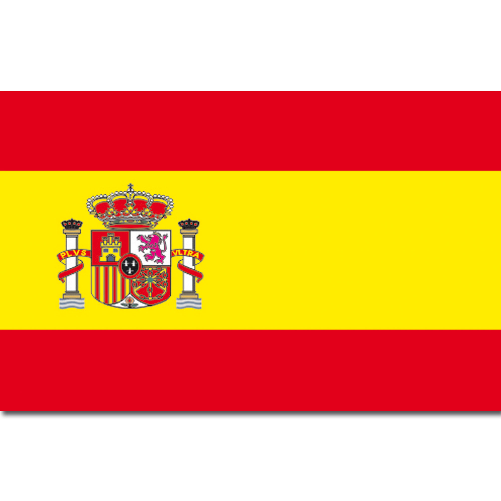
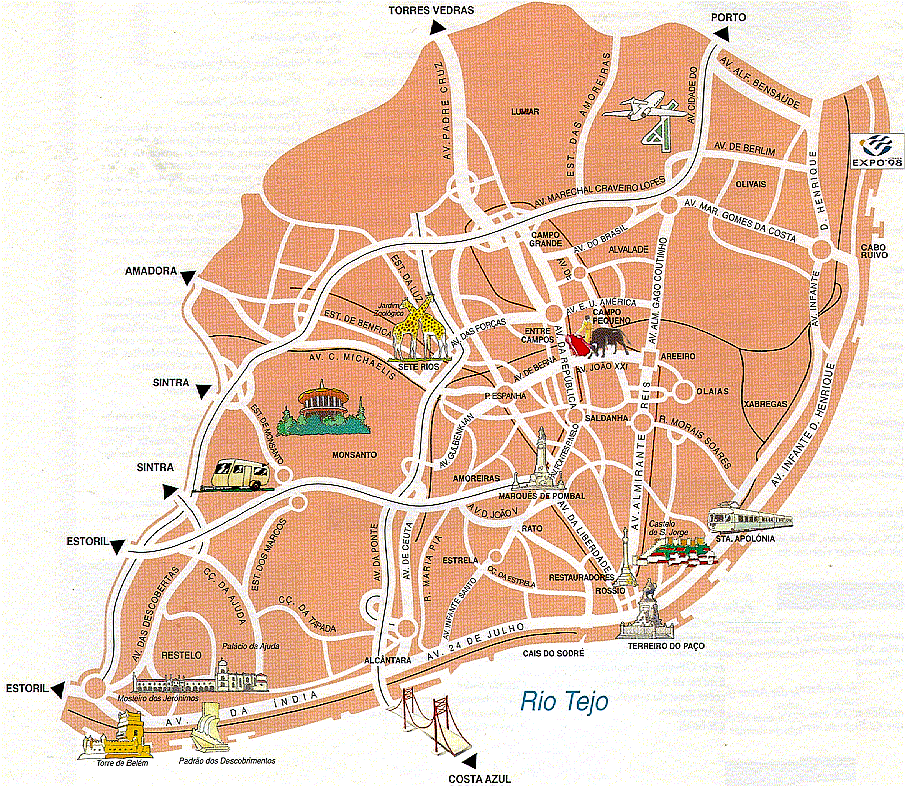

1. Portugal is one of the oldest states in Europe.
2. Portugal's capital city is the oldest city in Europe.
3. Lisbon had one of the most strongest earthquakes in Europe history.
4. Portugal owned half of the "New World".
5. Portugese is the offical language of 9 countries.
A Little Information You Have To Know About Portugal!!!
What is the capital city of Portugal?
The capital city of Portugal is Lisbon.
What is the offical language of Portugal?
The offical language of Portugal is Portugese.
If You Want To Learn How To Speak Portugese Watch This Video!!!
I Like This Video You Might Like It To!!!
Time For the real Information!!!!
Portugal is a Eastern Europe country, it's the oldest country in Europe.
The population is 10,140,570. The capital city is Lisbon, it's also the oldest
city in Europe. Portugal is most famous for it's cuisine and it's churchs, the
religion they support is Crishanity. Back in the 12 century Portugal had an empire
until the Spanish invaded here is a picture of the Spanish flag. 
After Portugal lost it's empire Great Britan attacked Portugal then ruled it,
however Portugal fought back and they were not ruled by any other country, but one day
Lisbon (The capital city of Portugal ) had the most powerfulest earthquakes in Europe history

houses broke, valcanos eruppted, 22,000 people died during the earthquakes in the last
couple of centuries:(!!!